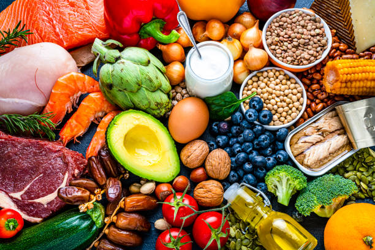
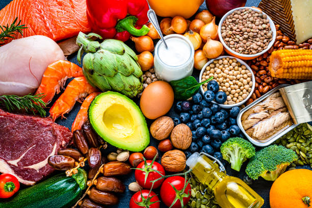

Shubh Varshney's Favorite Food
Food is definitely the best thing there is! Nothing can make you feel better! Here are some of my favorite food items. Some are desserts, main course items, or even cuisines.
My Favorite Foods Rankings:
- Falafel Sandwich with Baba Ghanoush and Hummus
- Thai Red Curry with Curry Fried Rice
- Pistachio flavored ice cream
Now, let me explain all of these further!
Mediterannean Cuisine!
I love everything about the Mediterranean cuisine. I love its explosive flavors, its sweet, salty, and sour vegetables, and how the chickpeas in the falafels and in the hummus just brings it together. Of course, the pita bread is one of the greatest ever.

Thai Cuisine!
I have a big sweet tooth, but I also love spicy, so there's nothing better than a cuisine that incorporates both! I also like the peanuts that bring a crunchy element to the pad thai. The sauce that they use is just something that cannot be bested.

Mexican Ice Cream!
Dessert is my favorite part of the meal! From La Michoacana, I get two scoops of my favorite pistachio ice cream every other week, enjoying the sweet and creamy goodness. It's such a unique flavor not found everywhere.

 
